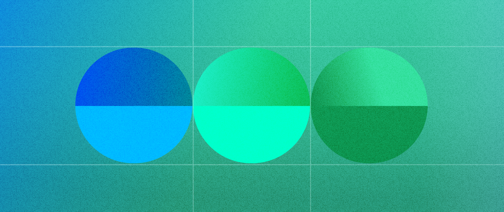
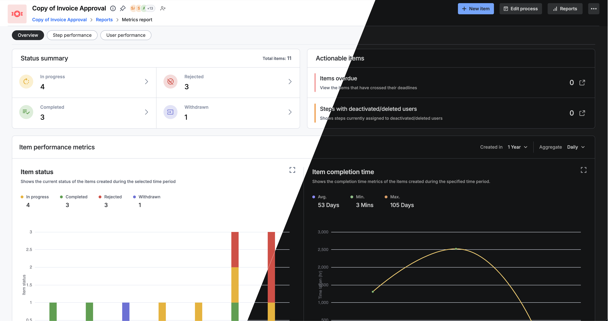
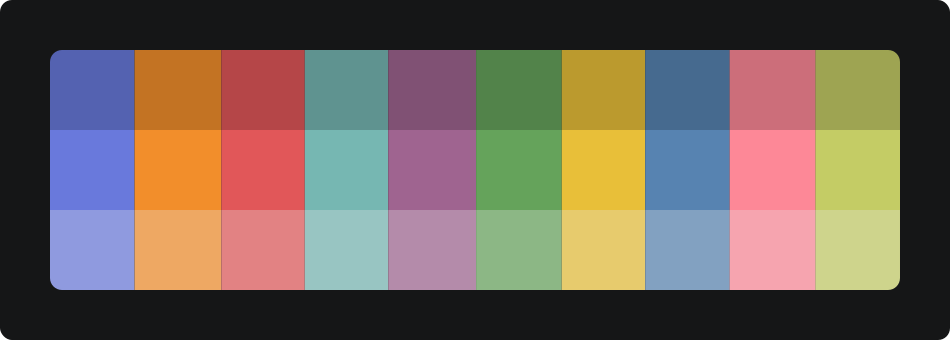

Color
Our color encapsulates a bold and adventurous ethos, mirroring the vibrant. symbolizing our dedication to capturing the essence of vivid blue.

Primary color
- #eef5ff
- #deeaff
- #acccff
- #69a3ff
- #0565ff
- #003c9c
- #002157
- #000711
Secondary color
Green
- #f2f9f2
- #d9eed8
- #c0e3bf
- #8dcc8b
- #4aa147
- #2c612b
- #193618
- #050b05
Magenta
- #fcf2f9
- #f6d9ed
- #f0c0e1
- #e58dc9
- #d341a5
- #861f66
- #4b1139
- #0f030b
Yellow
- #fefaee
- #fdf0cc
- #fce7ab
- #f9d367
- #eeb209
- #8f6b05
- #4f3b03
- #100c01
Red
- #fdf3f2
- #f9dad9
- #f4c1bf
- #ec8f8c
- #df4440
- #931c19
- #520f0e
- #100303
Orange
- #fef7f0
- #fde6d2
- #fcd5b5
- #f9b479
- #f58220
- #9f4d07
- #582b04
- #120901
Purple
- #f5f5fd
- #e2e2f8
- #cfcff3
- #a8a8e9
- #6e6edb
- #27279e
- #161658
- #040412
Teal
- #ecfdff
- #c5fafe
- #9ef7fd
- #50f0fb
- #05c2cf
- #03747c
- #024145
- #000d0e
Sky Blue
- #eefafe
- #cbefff
- #a8e5ff
- #63d0fd
- #03adf3
- #026892
- #013a51
- #000c10
Bitter Sweet
- #fff4f5
- #ffdfde
- #ffcacb
- #ffa0a0
- #ff6060
- #d30000
- #750000
- #170000
Orange Brown
- #fff5ec
- #fee0c3
- #fecc9d
- #fca34d
- #ce6603
- #7c3d02
- #452201
- #0e0700
Neutral color
Neutral colors apply to most backgrounds, text, and shapes in our experiences. They don’t typically have a meaning associated with them, though they can imply things like disabled states.
Alpha colors have varying levels of transparency or opacity. Transparency helps UI adapt to different background colors and elevations.
Alpha colors have varying levels of transparency or opacity. Transparency helps UI adapt to different background colors and elevations.
- #f7f8fa
- #f0f3f7
- #d8dce5
- #afb7c7
- #8b95a9
- #717d91
- #545c6b
- #454a52
- #292b2f
- #151617
- #ffffff
- #000000
- hsla(0, 0%, 100%, .75)
- hsla(0, 0%, 100%, .5)
- hsla(0, 0%, 100%, .25)
- hsla(0, 0%, 100%, .2)
- hsla(0, 0%, 100%, .1)
- rgba(175, 183, 199, .25)
- rgba(175, 183, 199, .5)
- rgba(175, 183, 199, .75)
Color Semantics
Color roles describe the intention behind the color. For example, color roles are applied to buttons to differentiate between primary, secondary, warning, or dangerous actions.
Success
Error
Warning
Info
Theming
We currently support three color themes: light, dark and dim.
Each color design token maps to a different value for each theme so their appearance differs depending on which theme is being used.

Each color design token maps to a different value for each theme so their appearance differs depending on which theme is being used.
Data Visualization
Color can affect our perception of information, the appropriate use of color is critical in making a data visualization.
